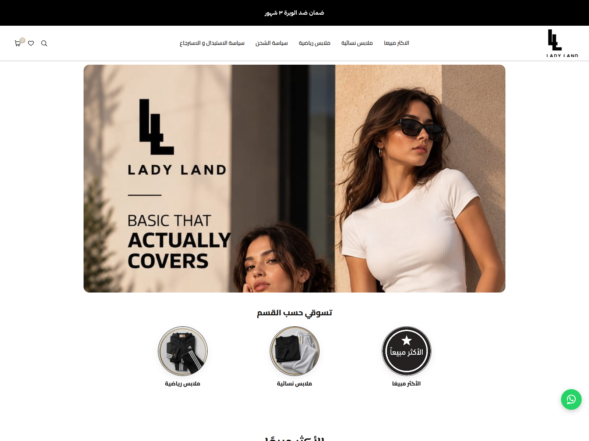

ليدي لاند ستورز
هوية أبيض وأسود راقية لعلامة ملابس نسائية تبحث عن مكان مختلف في السوق.

المطلوب
أراد الأستاذ حسين الدوسري علامة ملابس نسائية تدخل السوق بصورة جديدة وتنافس الكبار، برقيٍّ أعلى من السائد في هذا المجال.
وكان الموقع السابق بطيئًا جدًا، فأثّر ذلك في التجربة كلها، فكان إصلاح السرعة جزءًا أساسيًا من المهمة.
ما نفّذته
- اختيار الأبيض والأسود للوصول إلى لغة مباشرة ومختلفة، مستوحاة من أسلوب بيوت الأزياء العالمية مع هوية خاصة
- خطوط وألوان راقية مختارة بعناية لرفع مستوى المتجر عن السائد في السوق
- تصميم مخصص يبدو بوضوح مختلفًا عن القوالب الجاهزة لـ Shopify
- معالجة بطء الموقع السابق ليصبح التصفح سريعًا